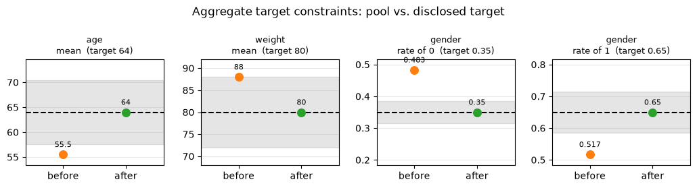
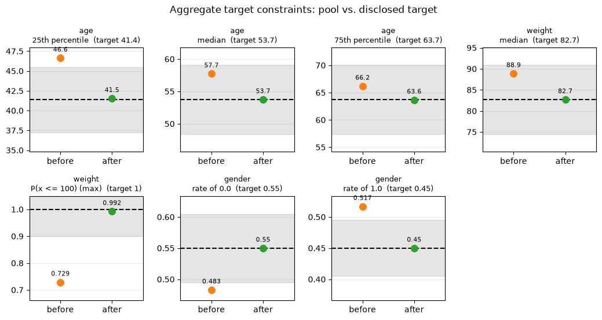

Weighting with MAIC / entropy balancing
Every matcher elsewhere in pybalance (genetic, LP, propensity) works by selecting a subset of the pool. pybalance.weighting instead reweights every pool patient, so nothing is dropped – some patients just count for more (or less) than others. This is the standard approach for Matching-Adjusted Indirect Comparison (MAIC) (Signorovitch et al., 2010): reweighting a trial’s patient-level data (“IPD”) so its weighted covariate moments match a comparator’s published,
aggregate-only statistics (e.g. a Table 1 of means and proportions), enabling an indirect treatment comparison when the comparator’s own patient-level data isn’t available.
MAICWeighter– the classic MAIC formulation: matches the disclosed first moments (means, category rates, and the rate above a disclosed median/quantile).EntropyBalanceWeighter– the general form MAIC is a special case of: optionally also balances the variance of numeric features whose target discloses a mean and a std.
The notebook mirrors the aggregate-matching demo: the same three use cases, each disclosing a bit more or something different about the target:
means only (plus a categoric proportion);
means and stds, which adds a variance constraint;
medians and other quantiles instead of means, plus a soft max.
As there, only disclosed statistics are constrained. Features the target says nothing about (here height and country) are left free, but we keep them in the MatchingData so we can still see how reweighting changes them. A last section covers what happens when the target lies outside the pool’s support.
Both weighters also work with a patient-level target, and both return an ordinary MatchingData, just with every pool row now carrying a fitted weight column.
[1]:
import logging
import matplotlib.pyplot as plt
import pandas as pd
from pybalance.sim import (
generate_toy_dataset,
get_demo_aggregate_target_path,
load_demo_aggregate_target,
)
from pybalance.utils import AggregateTarget, MatchingData, MatchingHeaders
from pybalance.visualization import plot_aggregate_target_match
from pybalance.weighting import (
EntropyBalanceWeighter,
MAICWeighter,
weighted_balance_table,
)
%matplotlib inline
# show convergence / effective-sample-size diagnostics logged during fit()
logging.basicConfig(level=logging.INFO, format="%(message)s", force=True)
A patient-level (synthetic) pool
MAIC needs patient-level data only for the pool (our “IPD”). generate_toy_dataset returns an entirely simulated one (no real patients); with n_target=0 it generates no target patients at all, since the target will come from summary statistics instead – as in the aggregate-matching demo.
[2]:
m = generate_toy_dataset(n_pool=1000, n_target=0, seed=7)
pool = m.get_population("pool").drop(columns=[m.population_col])
pool.head()
[2]:
| age | height | weight | gender | haircolor | country | binary_0 | binary_1 | binary_2 | binary_3 | patient_id | |
|---|---|---|---|---|---|---|---|---|---|---|---|
| 0 | 69.436489 | 155.189260 | 79.144533 | 0.0 | 1 | 4 | 0 | 0 | 1 | 1 | 0 |
| 1 | 28.771438 | 175.270602 | 97.734561 | 1.0 | 0 | 5 | 0 | 0 | 1 | 1 | 1 |
| 2 | 62.640154 | 136.648640 | 85.170055 | 0.0 | 1 | 2 | 0 | 0 | 0 | 1 | 2 |
| 3 | 68.907932 | 189.959952 | 90.705549 | 0.0 | 1 | 3 | 0 | 0 | 1 | 1 | 3 |
| 4 | 49.571169 | 133.787109 | 76.708193 | 1.0 | 2 | 3 | 0 | 0 | 0 | 1 | 4 |
Specifying means only
An AggregateTarget is the target’s sample size n plus whatever summary statistics are disclosed – a published Table 1:
numeric: per feature, e.g.{"mean": ...};categoric: per feature,{level: rate}– the proportion of each category.
Here the target discloses the mean age and weight and the proportion of each gender.
[3]:
my_target = AggregateTarget(
n=250,
numeric={
"age": {"mean": 64.0},
"weight": {"mean": 80.0},
},
categoric={"gender": {0: 0.35, 1: 0.65}},
)
my_target
[3]:
| feature | type | stat | value |
|---|---|---|---|
| age | numeric | mean | 64.00 |
| weight | numeric | mean | 80.00 |
| gender | categoric | 0 | 0.35 |
| gender | categoric | 1 | 0.65 |
To reweight, wrap the pool and the target in a MatchingData and hand it to MAICWeighter. match() fits (if needed) and returns a MatchingData with every pool patient retained, plus a new sample_weight column (the default weight_col; note it’s not called "weight", since weight here is itself a genuine covariate – MAICWeighter refuses to silently clobber a matching feature and raises if weight_col collides with one).
The headers say which pool columns we want to look at. They may include features the target does not disclose – here height and country. Those are left unconstrained by the weighter, but reported in the results.
weighted_balance_table() compares each balanced feature’s target moment to both the unweighted and weighted pool moment – the “weighted” column should land right on target.
[4]:
headers = MatchingHeaders(numeric=["age", "weight", "height"], categoric=["gender", "country"])
matching_data = MatchingData(pool=pool, target=my_target, headers=headers)
weighter = MAICWeighter(matching_data, verbose=True)
matched = weighter.match()
weighted_balance_table(weighter)
MAICWeighter converged in 6 iterations. Effective sample size: 377.7 / 1000 pool patients.
[4]:
| feature | moment | target | unweighted_pool | weighted_pool | |
|---|---|---|---|---|---|
| 0 | gender_1.0 | mean | 0.65 | 0.517000 | 0.650000 |
| 1 | country_1 | mean | NaN | 0.108000 | 0.095055 |
| 2 | country_2 | mean | NaN | 0.224000 | 0.219909 |
| 3 | country_3 | mean | NaN | 0.274000 | 0.301231 |
| 4 | country_4 | mean | NaN | 0.284000 | 0.303890 |
| 5 | country_5 | mean | NaN | 0.110000 | 0.079916 |
| 6 | age | mean | 64.00 | 55.520107 | 64.000000 |
| 7 | weight | mean | 80.00 | 88.016510 | 80.000000 |
| 8 | height | mean | NaN | 160.308334 | 156.103230 |
age, weight and gender land right on their targets in the weighted column. height and the country levels have no target (NaN) – nothing constrains them – but we can still see how they moved as a side effect of reweighting.
The effective sample size (ESS), \(\left(\sum_i w_i\right)^2 / \sum_i w_i^2\), summarizes how “spread out” the weights are: it equals the pool size when all weights are equal, and shrinks towards 1 as more and more of the total weight concentrates on fewer patients. A large drop from the raw pool size is the standard MAIC red flag that the reweighting is relying heavily on a small, possibly unrepresentative, slice of the pool – worth showing alongside any MAIC result.
[5]:
print(f"Effective sample size: {weighter.effective_sample_size():.1f} / {len(pool)} pool patients")
print(f"Converged: {weighter.diagnostics['converged']}")
print(f"Weight summary (sums to target n={my_target.n} by default):")
matched.get_population(matched.pool_name)["sample_weight"].describe()
Effective sample size: 377.7 / 1000 pool patients
Converged: True
Weight summary (sums to target n=250 by default):
[5]:
count 1000.000000
mean 0.250000
std 0.321042
min 0.002645
25% 0.060622
50% 0.144954
75% 0.304432
max 3.993364
Name: sample_weight, dtype: float64
Since the target here is an AggregateTarget, it has no patient-level rows for plot_numeric_features/plot_categoric_features to draw a distribution for – as of this version, passing one logs a warning and shows nothing useful. Use plot_aggregate_target_match() instead: one panel per disclosed constraint, showing where the pool lands before vs. after weighting relative to the disclosed value, in its own units. Pass weights= to compare the weighted pool.
[6]:
fig = plot_aggregate_target_match(matching_data, matched, weights=weighter.weight_col)

Specifying means and standard deviations
A Table 1 sometimes discloses a standard deviation alongside a mean. EntropyBalanceWeighter is the general form MAICWeighter is a (mean-only) special case of: pass match_variance=True to additionally constrain the weighted variance of every numeric feature whose target discloses a std (categoric features are never variance-constrained – their variance is already fixed by their matched rate). The variance is taken around the disclosed mean, so a std needs its mean.
Typing targets out by hand gets long, so pybalance.sim ships ready-made ones, the same as in the aggregate-matching demo: load_demo_aggregate_target(use_case) returns the packaged AggregateTarget (and generate_aggregate_target(use_case) derives the same thing from a toy dataset – or from your own patient-level MatchingData).
|
disclosed statistics |
|---|---|
|
|
|
|
|
|
Load means_std and reweight. Displaying the target shows exactly what it discloses; the table now has a variance row for age and weight next to their means.
[7]:
target_b = load_demo_aggregate_target("means_std")
display(target_b)
weighter_b = EntropyBalanceWeighter(
MatchingData(pool=pool, target=target_b, headers=headers), match_variance=True, verbose=True
)
weighter_b.match()
weighted_balance_table(weighter_b)
| feature | type | stat | value |
|---|---|---|---|
| age | numeric | mean | 50.795973 |
| age | numeric | std | 15.019030 |
| weight | numeric | mean | 82.079040 |
| weight | numeric | std | 18.721164 |
| gender | categoric | 0.0 | 0.550000 |
| gender | categoric | 1.0 | 0.450000 |
EntropyBalanceWeighter converged in 6 iterations. Effective sample size: 639.1 / 1000 pool patients.
[7]:
| feature | moment | target | unweighted_pool | weighted_pool | |
|---|---|---|---|---|---|
| 0 | gender_1.0 | mean | 0.450000 | 0.517000 | 0.450000 |
| 1 | country_1 | mean | NaN | 0.108000 | 0.108157 |
| 2 | country_2 | mean | NaN | 0.224000 | 0.216864 |
| 3 | country_3 | mean | NaN | 0.274000 | 0.258550 |
| 4 | country_4 | mean | NaN | 0.284000 | 0.311152 |
| 5 | country_5 | mean | NaN | 0.110000 | 0.105278 |
| 6 | age | mean | 50.795975 | 55.520107 | 50.795975 |
| 7 | age | variance | 225.571251 | 171.687210 | 225.571241 |
| 8 | weight | mean | 82.079041 | 88.016510 | 82.079041 |
| 9 | weight | variance | 350.482008 | 273.742310 | 350.481995 |
| 10 | height | mean | NaN | 160.308334 | 157.499874 |
Specifying medians and quantiles instead of means
Published Table 1s often report a median (“age, median: 41”) or other quantiles (“age, IQR: 35-52”) instead of a mean for a skewed covariate. A quantile (q, value) means P(raw <= value) = q, and a median is the single quantile 0.5: {"age": {"median": 41.0}} is exactly {"age": {"quantile": [(0.5, 41.0)]}}. The disclosed value is the cutpoint: the weighter dichotomizes the raw column there and matches the resulting rate, so you never compute the 0/1 column yourself. Here
age discloses its quartiles and weight only a median.
A target like this is easiest to keep in a file, and that is what load_demo_aggregate_target has been reading all along. Here is the packaged quantiles file:
[8]:
path = get_demo_aggregate_target_path("quantiles")
print(path, end="\n\n")
print(open(path).read())
/Users/gmema/src/matching-fork/venv/lib/python3.12/site-packages/pybalance/sim/data/aggregate_target_quantiles.csv
feature,statistic,parameter,value
,n,,100
age,quantile,0.25,41.37572755384545
age,median,,53.71747134991201
age,quantile,0.75,63.69799477706703
weight,median,,82.66384310636546
gender,rate,0.0,0.55
gender,rate,1.0,0.45
The file has one row per disclosed statistic, in four columns (feature, statistic, parameter, value): n, then mean / std / median / min / max rows for numeric features, quantile rows (with the proportion q in parameter) and rate rows (with the category level in parameter) for categoric ones. AggregateTarget.from_csv(path) reads it and to_csv() writes it, so a published Table 1 can be transcribed into a spreadsheet and loaded
directly.
Now load it and reweight. MAICWeighter matches the rate above each disclosed quantile – the age_q0.25_1.0, age_q0.5_1.0, … rows below are the indicators “age is above its disclosed quartile / median”, whose target rate is 1 - q. There is no mean for age or weight, so the table has no raw-feature rows to compare for them.
[9]:
target_c = AggregateTarget.from_csv(path)
display(target_c)
weighter_c = MAICWeighter(MatchingData(pool=pool, target=target_c, headers=headers), verbose=True)
weighter_c.match()
weighted_balance_table(weighter_c)
| feature | type | stat | value |
|---|---|---|---|
| age | numeric | quantile_0.25 | 41.375728 |
| age | numeric | quantile_0.5 | 53.717471 |
| age | numeric | quantile_0.75 | 63.697995 |
| weight | numeric | quantile_0.5 | 82.663843 |
| gender | categoric | 0.0 | 0.550000 |
| gender | categoric | 1.0 | 0.450000 |
MAICWeighter converged in 6 iterations. Effective sample size: 830.9 / 1000 pool patients.
[9]:
| feature | moment | target | unweighted_pool | weighted_pool | |
|---|---|---|---|---|---|
| 0 | gender_1.0 | mean | 0.45 | 0.517000 | 0.450000 |
| 1 | country_1 | mean | NaN | 0.108000 | 0.110618 |
| 2 | country_2 | mean | NaN | 0.224000 | 0.223352 |
| 3 | country_3 | mean | NaN | 0.274000 | 0.265532 |
| 4 | country_4 | mean | NaN | 0.284000 | 0.290569 |
| 5 | country_5 | mean | NaN | 0.110000 | 0.109929 |
| 6 | age_q0.25_1.0 | mean | 0.75 | 0.836000 | 0.750000 |
| 7 | age_q0.5_1.0 | mean | 0.50 | 0.600000 | 0.500000 |
| 8 | age_q0.75_1.0 | mean | 0.25 | 0.339000 | 0.250000 |
| 9 | weight_q0.5_1.0 | mean | 0.50 | 0.622000 | 0.500000 |
| 10 | height | mean | NaN | 160.308334 | 158.667453 |
A soft maximum
Trials also report ranges (“weight, max: 100”). min and max are simply the 0th and 100th quantile, so they can be added to any numeric feature: {"weight": {"median": 82.7, "max": 100.0}}, or a min/max row in the CSV. As in the matching demo they are soft. For a weighter there is a concrete reason: weights are strictly positive, so exactly zero weight on patients above a max cannot be reached. Instead the weight above the max is penalized (limit_penalty, 0.01 by
default; larger values enforce it more tightly) and shrinks to a small remainder, while the quartiles and the median are still matched exactly.
Here we take use case 3’s target and add a ceiling on weight:
[10]:
numeric = {feature: dict(stats) for feature, stats in target_c.numeric.items()}
numeric["weight"]["max"] = 100.0 # soft ceiling: no patient heavier than 100kg
target_d = AggregateTarget(n=target_c.n, numeric=numeric, categoric=target_c.categoric)
display(target_d)
weighter_d = MAICWeighter(MatchingData(pool=pool, target=target_d, headers=headers), verbose=True)
weighter_d.match()
above = (pool["weight"] > 100).to_numpy()
share = weighter_d.weights[above].sum() / weighter_d.weights.sum()
print(f"Share of the pool above 100kg: {above.mean():.1%} unweighted, {share:.1%} weighted")
weighted_balance_table(weighter_d)
| feature | type | stat | value |
|---|---|---|---|
| age | numeric | quantile_0.25 | 41.375728 |
| age | numeric | quantile_0.5 | 53.717471 |
| age | numeric | quantile_0.75 | 63.697995 |
| weight | numeric | quantile_0.5 | 82.663843 |
| weight | numeric | max | 100.000000 |
| gender | categoric | 0.0 | 0.550000 |
| gender | categoric | 1.0 | 0.450000 |
Detected constant feature(s) in target population: weight_q1.0_0.0,weight_q1.0_1.0.
MAICWeighter converged in 7 iterations. Effective sample size: 653.8 / 1000 pool patients.
Share of the pool above 100kg: 27.1% unweighted, 0.8% weighted
[10]:
| feature | moment | target | unweighted_pool | weighted_pool | |
|---|---|---|---|---|---|
| 0 | gender_1.0 | mean | 0.45 | 0.517000 | 0.450000 |
| 1 | country_1 | mean | NaN | 0.108000 | 0.117517 |
| 2 | country_2 | mean | NaN | 0.224000 | 0.221034 |
| 3 | country_3 | mean | NaN | 0.274000 | 0.270855 |
| 4 | country_4 | mean | NaN | 0.284000 | 0.278525 |
| 5 | country_5 | mean | NaN | 0.110000 | 0.112069 |
| 6 | age_q0.25_1.0 | mean | 0.75 | 0.836000 | 0.750000 |
| 7 | age_q0.5_1.0 | mean | 0.50 | 0.600000 | 0.500000 |
| 8 | age_q0.75_1.0 | mean | 0.25 | 0.339000 | 0.250000 |
| 9 | weight_q0.5_1.0 | mean | 0.50 | 0.622000 | 0.500000 |
| 10 | weight_q1.0_1.0 | mean | 0.00 | 0.271000 | 0.007701 |
| 11 | height | mean | NaN | 160.308334 | 156.765991 |
plot_aggregate_target_match – the per-constraint plot from the matching demo – takes the weights too: pass the name of the weight column and the “after” dot is the weighted pool, compared with the unweighted one before. Each panel is one disclosed constraint in its own units (e.g. the 25th, 50th and 75th percentile of age). A disclosed max is plotted as the weighted fraction of patients at or below it, P(x <= 100), since weights stay positive and the maximum value never moves:
it rises from 73% to about 99%, but not all the way to the dashed line at 1.
[11]:
fig = plot_aggregate_target_match(weighter_d.matching_data, weighter_d.match(), weights="sample_weight")

When the target lies outside the pool’s support
MAIC/entropy balancing needs the target to lie within the pool’s covariate support – there must be some valid (possibly very uneven) weighting of the pool that reproduces the target’s moments. Unlike subset-selection matching (which always terminates, just possibly with poor balance), reweighting can fail outright when this “positivity” assumption breaks down.
The toy pool is deliberately built with zero country=0 patients, while the target has a nonzero country=0 rate. Since every pool patient’s country is one of {1, ..., 5}, any reweighting of the pool necessarily puts 100% of its mass on those five categories – it’s mathematically impossible to also match the target’s five corresponding rates, which sum to less than 100% (the rest being the unreachable country=0). We use the actual patient-level target here (rather than
an AggregateTarget) to make this concrete: an AggregateTarget that discloses a rate for a category the pool doesn’t contain at all silently drops that category from the constraint set (it has no matching one-hot column to constrain), which would mask the very infeasibility we want to demonstrate.
[12]:
hard_m = generate_toy_dataset(n_pool=1000, n_target=100, seed=7)
hard_pool = hard_m.get_population("pool").drop(columns=[hard_m.population_col])
hard_target_pl = hard_m.get_population("target").drop(columns=[hard_m.population_col])
hard_headers = MatchingHeaders(numeric=["age", "weight", "height"], categoric=["gender", "country"])
print("country rate in pool: ", hard_pool["country"].value_counts(normalize=True).sort_index().to_dict())
print("country rate in target:", hard_target_pl["country"].value_counts(normalize=True).sort_index().to_dict())
hard_matching_data = MatchingData(pool=hard_pool, target=hard_target_pl, headers=hard_headers)
hard_weighter = MAICWeighter(hard_matching_data, verbose=True)
hard_weighter.match()
weighted_balance_table(hard_weighter)
MAICWeighter did not converge within 200 iterations (max constraint violation = 0.296). Weights may not exactly balance the requested moments; consider increasing max_iter/ridge, or check for unmatchable (e.g. near-extreme or non-overlapping) covariates.
country rate in pool: {1: 0.108, 2: 0.224, 3: 0.274, 4: 0.284, 5: 0.11}
country rate in target: {0: 0.09, 1: 0.25, 2: 0.2, 3: 0.11, 4: 0.2, 5: 0.15}
[12]:
| feature | moment | target | unweighted_pool | weighted_pool | |
|---|---|---|---|---|---|
| 0 | gender_1.0 | mean | 0.450000 | 0.517000 | 0.464052 |
| 1 | country_1 | mean | 0.250000 | 0.108000 | 0.340190 |
| 2 | country_2 | mean | 0.200000 | 0.224000 | 0.080990 |
| 3 | country_3 | mean | 0.110000 | 0.274000 | 0.143957 |
| 4 | country_4 | mean | 0.200000 | 0.284000 | 0.254031 |
| 5 | country_5 | mean | 0.150000 | 0.110000 | 0.180831 |
| 6 | age | mean | 50.795975 | 55.520107 | 51.570918 |
| 7 | weight | mean | 82.079033 | 88.016510 | 81.907367 |
| 8 | height | mean | 153.795044 | 160.308334 | 154.426966 |
As expected, the fit reports converged: False. Because a valid reweighting of the pool can only ever distribute 100% of its mass across country in {1, ..., 5}, it’s mathematically impossible to simultaneously hit the target’s rates for those five categories, which sum to only 91% (the rest being the unreachable country=0) – there’s no weighting that can reconcile the two. Notice how the optimizer, unable to satisfy the country constraints, ends up trading away balance on every
other feature too (gender, age, weight, height are all now visibly off target) while it searches for a best-effort compromise, and the effective sample size drops sharply. This is exactly the honest, “don’t silently produce a wrong answer” behavior we want. If you hit this in practice: check for categories/ranges the target has that the pool structurally lacks, consider dropping the offending feature, or fall back to subset-selection matching (which can’t invent missing
categories either, but degrades more gracefully – see the aggregate-matching demo).
[13]:
print(f"Converged: {hard_weighter.diagnostics['converged']}")
print(f"Max constraint violation: {hard_weighter.diagnostics['max_constraint_violation']:.3f}")
print(f"Effective sample size: {hard_weighter.effective_sample_size():.1f} / {len(hard_pool)} pool patients")
Converged: False
Max constraint violation: 0.296
Effective sample size: 443.4 / 1000 pool patients
Takeaways
Weighting keeps every pool patient, unlike the subset-selection matchers elsewhere in
pybalance– some patients just count for more or less.MAICWeighteris the classic mean-only MAIC formulation;EntropyBalanceWeighter(match_variance=True)generalizes it to also balance disclosed variances.Against an
AggregateTarget, every disclosed statistic is its own constraint and nothing else is constrained: a numeric mean, each categoric rate, and the rate above each disclosed median/quantile (the feature is dichotomized at the disclosed value). Features and categoric levels the target doesn’t disclose are left free, andweighted_balance_tablestill reports them (with no target) so you can see how reweighting moved them.Balancing a std needs the mean as well, since the variance is taken around it. A std without a mean isn’t a moment constraint reweighting can solve (use the subset-selection matchers).
``min`` and ``max`` are soft here too: exactly zero weight above a max is out of reach for positive weights, so the weight above it is only penalized (
limit_penalty) and shrinks, rather than vanishing.Both weighters also work with a patient-level target.
Always check
effective_sample_size()and.diagnostics["converged"]alongside any fitted weights – a low ESS or non-convergence is the signal that the reweighting is stretching thin (or failing outright) to reach the target, most often because of a genuine covariate-support mismatch between pool and target.